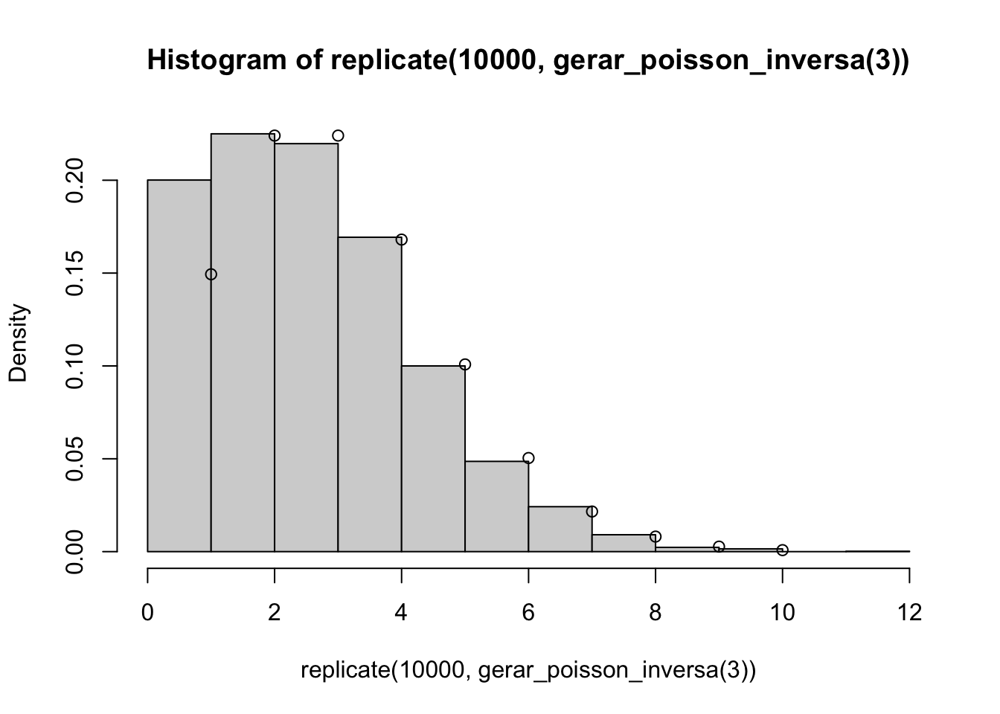
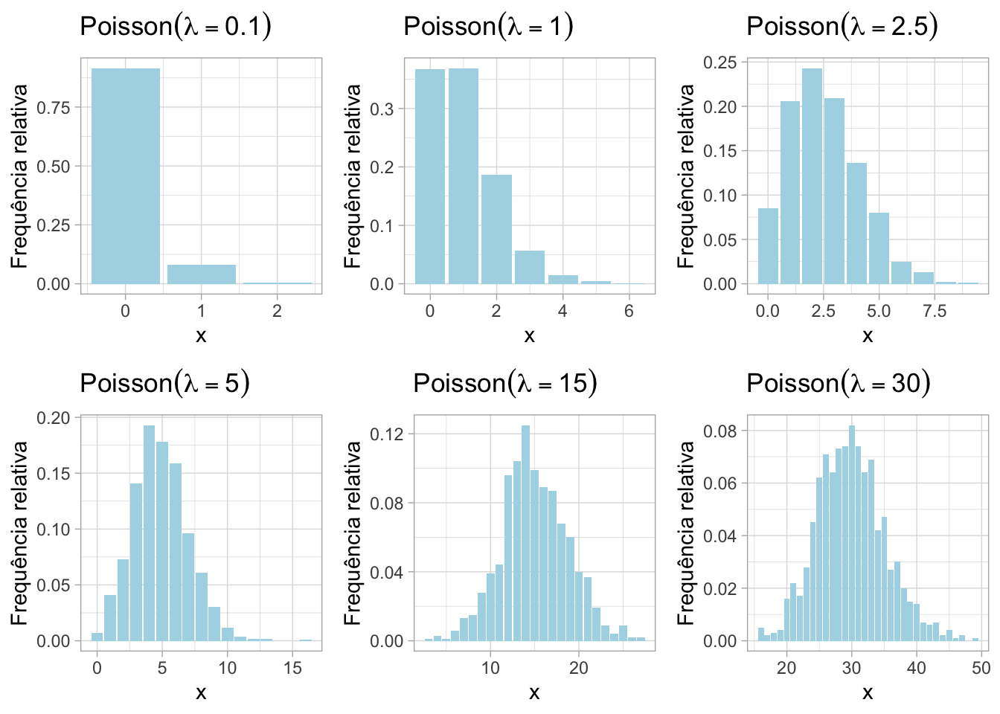
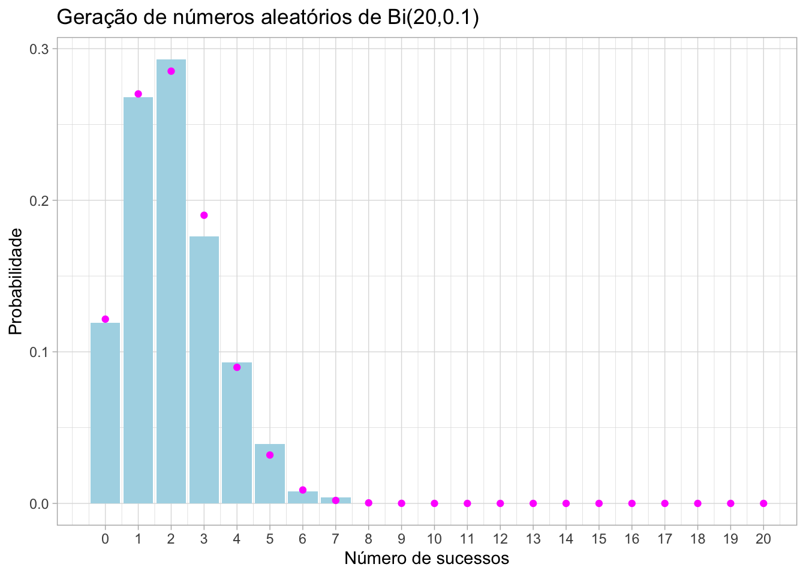
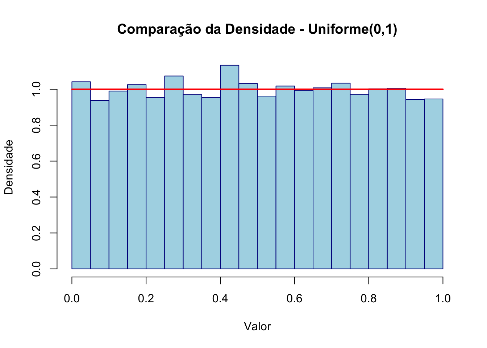
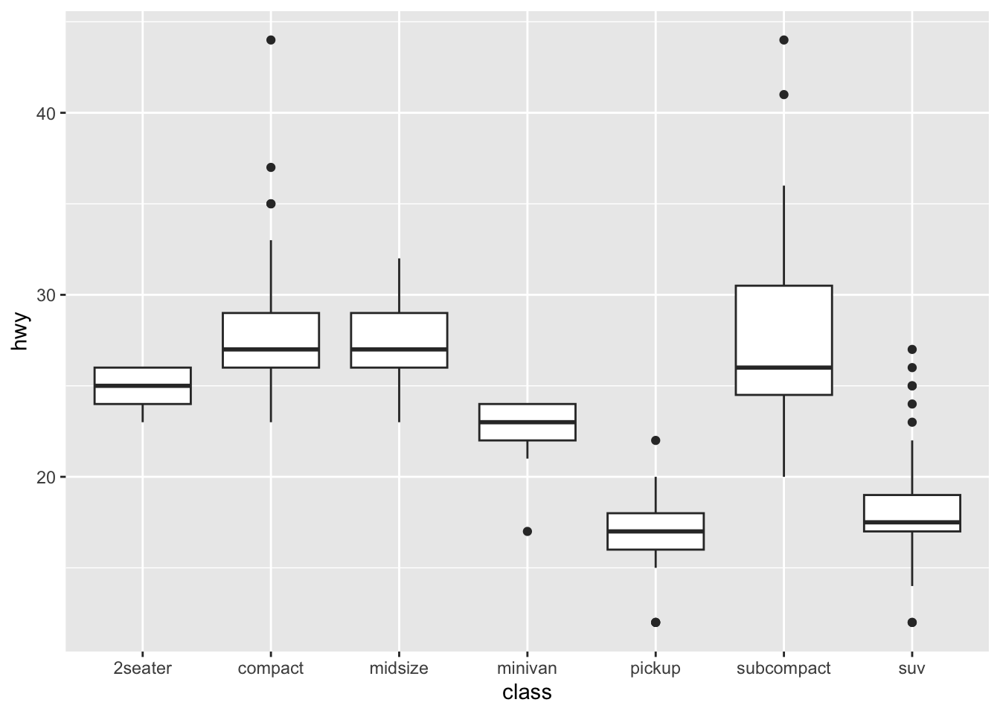
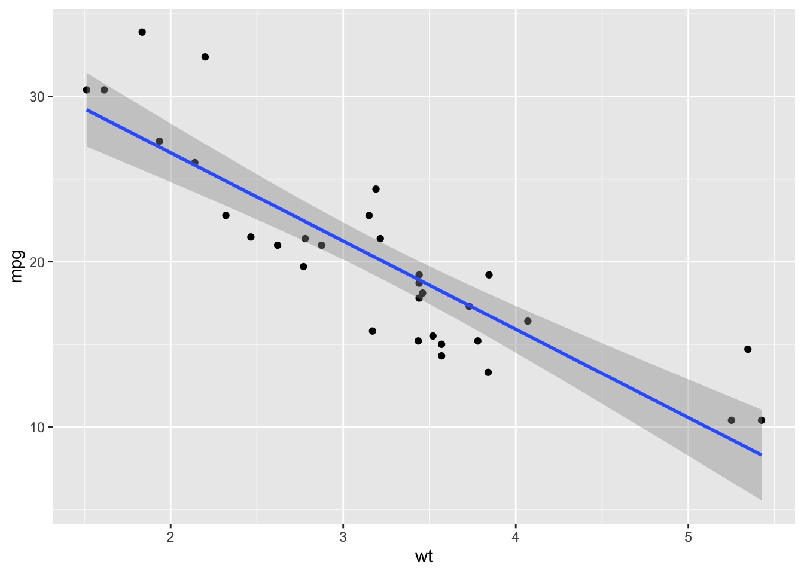
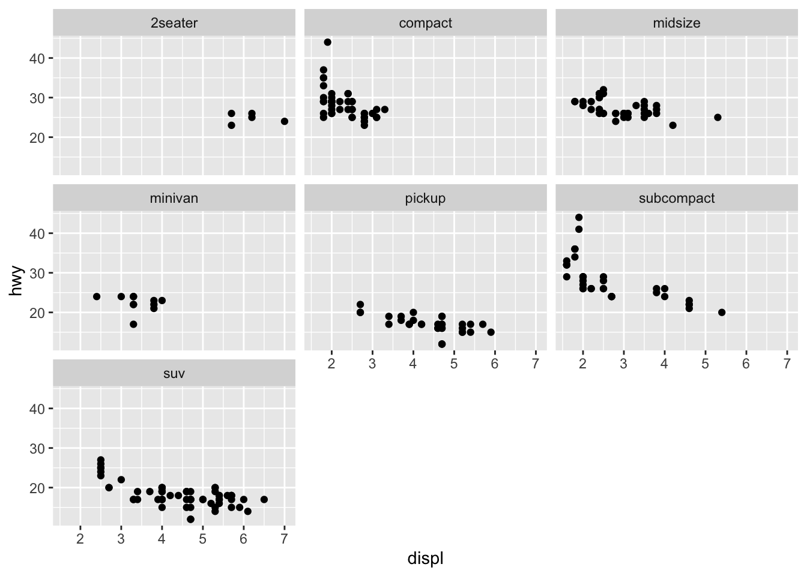
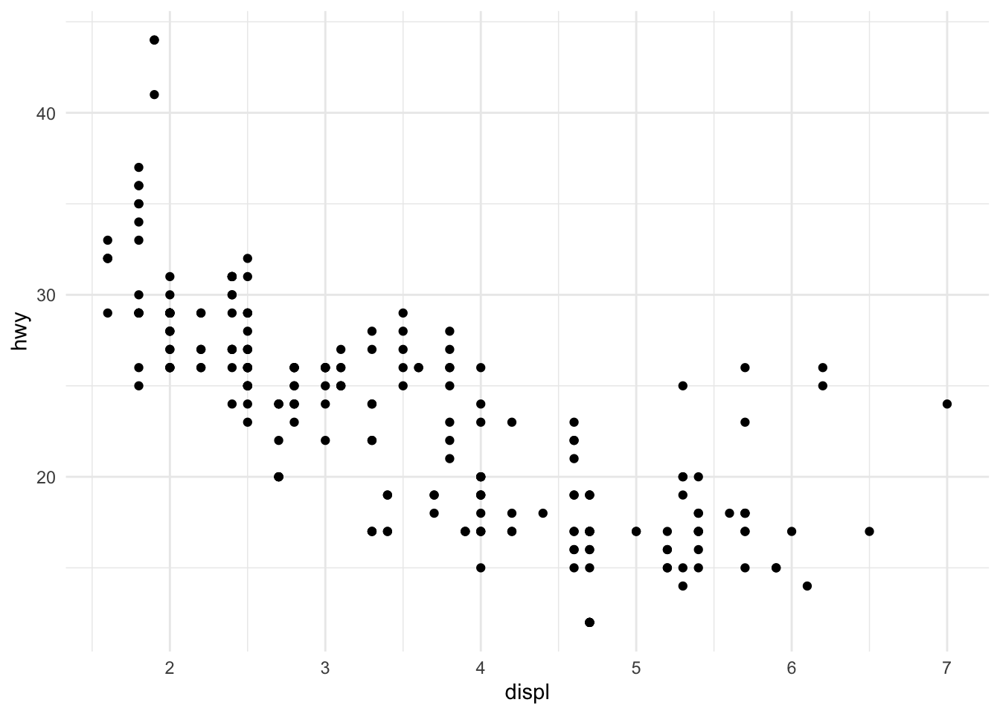
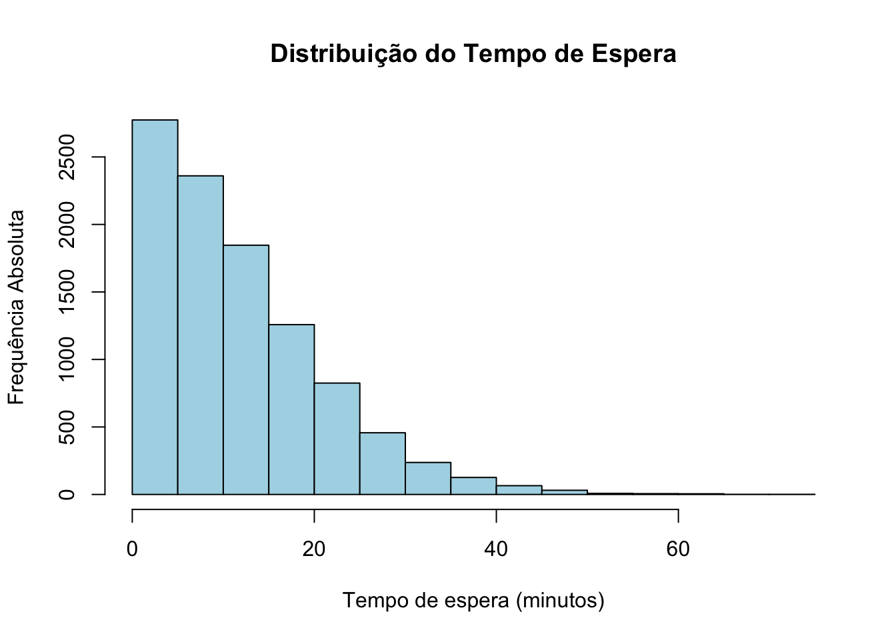

Capítulo 19 Distribuições univariadas no R
No R temos acesso as mais comuns distribuições univariadas. Todas as funções tem as seguintes formas:
| Função | Descrição |
|---|---|
| pnome( …) | função de distribuição |
| dnome( …) | função de probabilidade ou densidade de probabilidade |
| qnome( …) | inversa da função de distribuição |
| rnome( …) | geração de números aleatórios com a distribuição especificada |
o nome é uma abreviatura do nome usual da distribuição (binom,
geom, pois, unif, exp, norm, …).
Exempo 1: Simule o lançamento de três moedas honestas e a contagem do número de caras X.
(a) Use a sua simulação para estimar \(P(X=1)\) e \(E(X)\).
(b) Modifique a alínea anterior para permitir uma moeda viciada onde \(P(cara)=3/4\).
set.seed(123)
n <- 10000
sim1 <- numeric(n)
sim2 <- numeric(n)
for (i in 1:n) {
moedas <- sample(0:1,3,replace=T)
sim1[i] <- if (sum(moedas)==1) 1 else 0
sim2[i] <- sum(moedas)
}
# P(X=1)
mean(sim1)## [1] 0.3821## [1] 1.4928set.seed(123)
n <- 10000
sim1 <- numeric(n)
sim2 <- numeric(n)
for (i in 1:n) {
moedas <- sample(c(0,1),3,prob=c(1/4,3/4),replace=T)
sim1[i] <- if (sum(moedas)==1) 1 else 0
sim2[i] <- sum(moedas)
}
# P(X=1)
mean(sim1)## [1] 0.1384## [1] 2.2503Sabemos também que \(X-\) número de caras no lançamneto de três moedas honestas tem distribuição \(Binomial(n=3,p=0.5)\). Assim, podemos resolver a questão da seguinte maneira
## [1] 0.383## [1] 1.4897## [1] 1.4897No segundo caso teremos \(X \sim Binomial(n=3,p=3/4)\).
## [1] 0.1365## [1] 2.2558## [1] 2.2558Exemplo 2: O tempo até a chegada de um autocarro tem uma distribuição exponencial com média de 30 minutos.
(a) Use o comando rexp() para simular a probabilidade do autocarro chegar nos primeiros 20 minutos.
(b) Use o comando pexp() para comparar com a probabilidade exata.
set.seed(123)
valores <- rexp(10000, 1/30)
# Probabilidade P(X <=20)
sum( valores < 20)/length(valores)## [1] 0.4832## [1] 0.4865829Exemplo 3: As cartas são retiradas de um baralho padrão, com reposição, até que um ás apareça. Simule a média e a variância do número de cartas necessárias.
set.seed(123)
n <- 10000
# Denote os ases por 1,2,3,4
simlist <- numeric(n)
for (i in 1:n) {
ct <- 0
as <- 0
while (as == 0) {
carta <- sample(1:52,1,replace=T)
ct <- ct + 1
if (carta <= 4){
as <- 1
}
}
simlist[i] <- ct
}
mean(simlist)## [1] 12.8081## [1] 147.5318Podemos notar aqui tambném que \(X-\) número de provas de Bernoulli até o primeiro sucesso (aparecer um ás), que tem distribuição \(Geométrica(p=4/52)\). Lembre que o R trabalha com a geométrica como sendo \(X-\) número de insucessos até o primeiro sucesso.
## [1] 13.0108## [1] 152.033519.1 Função de distribuição empírica
A função de distribuição empírica é uma função de distribuição acumulada que descreve a proporção ou contagem de observações em um conjunto de dados que são menores ou iguais a um determinado valor. É uma ferramenta útil para visualizar a distribuição de dados observados e comparar distribuições amostrais.
É uma função definida para todo número real \(x\) e que para cada \(x\) dá a proporção de elementos da amostra menores ou iguais a \(x\): \[F_{n}(x) = \frac{\# \, \text{observações} \leq x}{n}\]
Para construir a função de distribuição empírica precisamos primeiramente ordenar os dados em ordem crescente: \((x_{(1)},\ldots,x_{(n)})\)
A definição da função de distribuição empírica é \[F_{n}(x) = \begin{cases} 0, & \quad x < x_{(1)} \\ \frac{i}{n}, & \quad x_{(i)}\leq x < x_{(i+1)}, \quad i=1,\ldots,n-1 \\ 1, & \quad x\geq x_{(n)} \end{cases}\]
Passo a passo para a construção da função
- Inicie desenhando a função do valor mais à esquerda para o mais à direita.
- Atribua o valor 0 para todos os valores menores que o menor valor da amostra, \(x_{(1)}\) .
- Atribua o valor \(\frac{1}{n}\) para o intervalo entre \(x_{(1)}\) e \(x_{(2)}\), o valor \(\frac{2}{n}\) para o intervalo entre \(x_{(2)}\) e \(x_{(3)}\), e assim por diante, até atingir todos os valores da amostra.
- Para valores iguais ou superiores ao maior valor da amostra, \(x_{(n)}\), a função tomará o valor 1.
- Se um valor na amostra se repetir \(k\) vezes, o salto da função para esse ponto será \(\frac{k}{n}\), em vez de \(\frac{1}{n}\).
19.1.1 Função de distribuição empírica no R, função ecdf()
A função ecdf() no R é usada para calcular a função de distribuição
empírica (Empirical Cumulative Distribution Function - ECDF) de um
conjunto de dados.
# Conjunto de dados
dados <- c(3, 1, 4, 1, 5, 9, 2, 6, 5, 3, 5)
# Calcular a ECDF usando a função ecdf()
Fn <- ecdf(dados)
# Plotar a ECDF usando a função ecdf()
plot(Fn, main = "Função de Distribuição Empírica", xlab = "x", ylab = "Fn(x)", col = "blue", lwd = 2)
Exemplo 1: Resolva o exemplo 1 usando a função de distribuição empírica.
valores <- rexp(10000, 1/30)
# Função de distribuição empírica
Fn <- ecdf(valores)
# Probabilidade P(X<=20)
Fn(20)## [1] 0.4874## [1] 0.486582919.1.2 Função massa de probabilidade (teórica)
# Simulação de Variáveis aleatórias
# Função massa de probabilidade Binomial(n,p)
n <- 20
p <- 0.1
x <- 0:20
teorico <- data.frame(x = x, y=dbinom(x, size = n, prob = p))
# Carregue o pacote ggplot2
library(ggplot2)
ggplot(teorico) +
geom_point(aes(x = x, y=y), color = "blue") +
scale_x_continuous(breaks = 0:n) +
labs(title = "Binomial(20,0.1)", x = "Número de sucessos", y = "Probabilidade") +
theme_light()
19.1.3 Função massa de probabilidade (simulação)
set.seed(1234)
n <- 20
p <- 0.9
k <- 1000 # número de simulações
dados <- data.frame(X = rbinom(k, size = n, prob = p))
# Carregue o pacote ggplot2library(ggplot2)
ggplot(dados) +
geom_bar(aes(x=X, y=after_stat(prop)), fill = "lightblue") +
scale_x_continuous(breaks = 0:n) +
labs(title = "Geração de números aleatórios de Bi(20,0.9)", x="Número de sucessos",
y="Frequência relativa") +
theme_light()
19.1.4 Comparação
set.seed(1234)
n <- 20
p <- 0.1
k <- 1000 # número de simulações
dados <- data.frame(X = rbinom(k, size = n, prob = p))
teorico <- data.frame(x = 0:n, y=dbinom(0:n, size = n, prob = p))
# Carregue o pacote ggplot2
library(ggplot2)
ggplot(dados) +
geom_bar(aes(x = X, y = after_stat(prop)), fill = "lightblue") +
geom_point(data = teorico, aes(x, y), color = "magenta") +
scale_x_continuous(breaks = 0:n) +
labs(title = "Geração de números aleatórios de Bi(20,0.1)", x = "Número de sucessos",
y = "Probabilidade") +
theme_light()
19.1.5 Função de distribuição
# Definir os parâmetros da distribuição binomial
n <- 10 # Número de tentativas
p <- 0.5 # Probabilidade de sucesso
# Valores possíveis de sucessos (0 a n)
x <- 0:n
# Calcular a FD
cdf_values <- pbinom(x, size = n, prob = p)
# Plotar a FD
plot(x, cdf_values, type = "s", lwd = 2, col = "blue",
xlab = "Número de Sucessos", ylab = "F(x)",
main = "Função de Distribuição Acumulada da Binomial(n = 10, p = 0.5)")
19.1.6 Função de distribuição empírica
# Definir os parâmetros da distribuição binomial
n <- 10 # Número de tentativas
p <- 0.5 # Probabilidade de sucesso
set.seed(123)
# Amostra aleatória de dimensão 1000
amostra <- rbinom(1000,size = n, prob = p)
# Distribuição empírica
Fn <- ecdf(amostra)
# Plotar CDF
plot(Fn, main = "Função de Distribuição Empírica", xlab = "x",
ylab = "Fn(x)", col = "blue")

Cálculo de probabilidade: Seja \(X \sim \text{Binomial}(n=10, p=0.5)\).
\(P(X \leq 4) =\) pbinom(4,10,0.5) = 0.377
\(P(X \leq 4) \approx\) Fn(4) = 0.382
19.2 Gerando uma variável aleatória com distribuição de Poisson
19.2.1 Cálculo de probabilidades
Seja \(X\sim\text{Poisson}(\lambda=5)\).
\(P(X =4) \to\) dpois(4,5) = 0.1755
\(P(X\leq 4) \to\) ppois(4,5) = 0.4405
\(P(X > 4)\to\) ppois(4,5,lower.tail=FALSE)= 0.5595
19.2.2 Função massa de probabilidade (teórica)
# Definir os valores de lambda e x
p <- c(0.1, 1, 2.5, 5, 15, 30)
x <- 0:50
# Carregar os pacotes necessários
library(ggplot2)
library(latex2exp)
library(gridExtra)##
## Attaching package: 'gridExtra'## The following object is masked from 'package:dplyr':
##
## combine# Inicializar uma lista para armazenar os gráficos
plots <- list()
# Loop para criar os data frames e gráficos
for (i in 1:length(p)) {
teorico <- data.frame(x = x, y = dpois(x, lambda = p[i]))
plots[[i]] <- ggplot(teorico) +
geom_point(aes(x = x, y = y), color = "blue") +
scale_x_continuous(breaks = seq(0, 50, by = 10)) +
labs(title = TeX(paste0("$Poisson(lambda=", p[i], ")$")), x="x", y="Probabilidade") +
theme_light()
}
# Dispor os gráficos em uma grade 2x3
grid.arrange(grobs = plots, nrow = 2, ncol = 3)
19.2.3 Função massa de probabilidade (simulação)
p <- c(0.1, 1, 2.5, 5, 15, 30)
n <- 1000
# Carregar os pacotes necessários
library(ggplot2)
library(latex2exp)
library(gridExtra)
# Inicializar uma lista para armazenar os gráficos
plots <- list()
# Loop para criar os data frames e gráficos
for (i in 1:length(p)) {
dados <- data.frame(X = rpois(n, lambda = p[i]))
plots[[i]] <- ggplot(dados) +
geom_bar(aes(x = X, y =after_stat(prop)), fill="lightblue") +
labs(title=TeX(paste("$Poisson(lambda=", p[i], ")$")),
x = "x", y = "Frequência relativa") +
theme_light()
}
# Dispor os gráficos em uma grade 2x3
grid.arrange(grobs = plots, nrow = 2, ncol = 3)
19.2.4 Comparação
p <- c(0.1, 1, 2.5, 5, 15, 30)
n <- 1000
# Carregar os pacotes necessários
library(ggplot2)
library(latex2exp)
library(gridExtra)
# Inicializar uma lista para armazenar os gráficos
plots <- list()
# Loop para criar os data frames e gráficos
for (i in 1:length(p)) {
dados <- data.frame(X = rpois(n, lambda = p[i]))
teorico <- data.frame(x=0:50, y=dpois(0:50,p[i]))
plots[[i]] <- ggplot(dados) +
geom_bar(aes(x = X, y =after_stat(prop)), fill="lightblue") +
geom_point(data = teorico, aes(x, y), color = "magenta") +
scale_x_continuous(breaks = seq(0, 50, by = 10)) +
labs(title=TeX(paste("$Poisson(lambda=", p[i], ")$")),
x = "x", y = "Frequência relativa") +
theme_light()
}
# Dispor os gráficos em uma grade 2x3
grid.arrange(grobs = plots, nrow = 2, ncol = 3)
19.2.5 Função de distribuição
lambda <- 5 # Parâmetro da Poisson
x <- 0:15 # Valores de x para plotar a distribuição
# Calcular a FD
y <- ppois(x, lambda = lambda)
# Plotar a FD
plot(x,y, type="s", lwd=2, col="blue",
main=TeX(paste("Função de Distribuição da $Poisson (lambda =", lambda, ")$")),
xlab = "x",
ylab = "F(x)")
19.2.6 Função de distribuição empírica
library(latex2exp)
# Definir os parâmetros da distribuição de Poisson
lambda <- 5
dados <- rpois(1000,lambda = lambda)
Fn <- ecdf(dados)
# Plotar CDF
plot(Fn, main=TeX("Função de Distribuição Empírica da $Poisson(lambda = 5)$"),
xlab = "x",
ylab = "Fn(x)",
col = "blue")
# OU
#plot.ecdf(dados)
plot(Fn, main="Função de Distribuição Empírica",
xlab="x",
ylab="Fn",
col="blue",
verticals = TRUE)
Cálculo de probabilidades: Seja \(X\sim\text{Poisson}(\lambda=5)\).
\(P(X\leq 4) \to\) ppois(4,5) = 0.4405
\(P(X \leq 4) \to\) Fn(4) = 0.433
19.3 Gerando uma variável aleatória com distribuição de Uniforme
19.3.1 Cálculo de probabilidades
Seja \(X\sim \text{Uniforme}(0,1)\)
\(P(X\leq 0.5) \to\)
punif(0.5, min = 0, max = 1)= 0.5\(P(X > 0.5) \to\)
punif(0.5, min = 0, max = 1, lower.tail = FALSE)= 0.5
19.3.2 Função densidade de probabilidade
# Gerar os valores x para a densidade teórica
x_vals <- seq(0, 1, length.out = 100)
# Calcular a densidade teórica para os valores x
y_vals <- dunif(x_vals, min = 0, max = 1)
# Desenhar o gráfico da função densidade de probabilidade
plot(x_vals, y_vals, type = "l",
col = "red", lwd = 2,
main = "Densidade da Distribuição Uniforme (0,1)",
xlab = "Valor", ylab = "Densidade")
19.3.3 Função densidade de probabilidade (simulação)
# Definir o tamanho da amostra
n <- 10000
# Fixar a semente para reprodutibilidade
set.seed(123)
# Gerar a variável aleatória com distribuição uniforme (0,1)
uniform_data <- runif(n, min = 0, max = 1)
# Criar um histograma da amostra
hist(uniform_data, probability = TRUE,
main = "Histograma da Densidade - Uniforme(0,1)",
xlab = "Valor",
ylab = "Densidade",
col = "lightblue",
border = "darkblue")
19.3.4 Comparação
# Definir o tamanho da amostra
n <- 10000
# Fixar a semente para reprodutibilidade
set.seed(123)
# Gerar a variável aleatória com distribuição uniforme (0,1)
uniform_data <- runif(n, min = 0, max = 1)
# Criar um histograma da amostra com densidade
hist(uniform_data, probability = TRUE,
main = "Comparação da Densidade - Uniforme(0,1)",
xlab = "Valor",
ylab = "Densidade",
col = "lightblue",
border = "darkblue")
# Adicionar a curva da densidade teórica
curve(dunif(x, min = 0, max = 1),
add = TRUE,
col = "red",
lwd = 2)
19.3.5 Função de distribuição
# Gerar os valores x para a FD teórica
x_vals <- seq(0, 1, length.out = 100)
# Calcular a FD teórica para os valores x
y_vals <- punif(x_vals, min = 0, max = 1)
# Desenhar o gráfico da função de distribuição acumulada
plot(x_vals, y_vals, type = "l",
col = "blue", lwd = 2,
main = "Função de Distribuição Uniforme (0,1)",
xlab = "Valor", ylab = "F(x)")
19.3.6 Função de distribuição empírica
# Definir o tamanho da amostra
n <- 10000
# Fixar a semente para reprodutibilidade
set.seed(123)
# Gerar a variável aleatória com distribuição uniforme (0,1)
uniform_data <- runif(n, min = 0, max = 1)
# Função de distribuição empírica
Fn <- ecdf(uniform_data)
plot(Fn, main="Função de Distribuição Empírica",
xlab="x",
ylab="Fn",
col="blue")
19.4 Gerando uma variável aleatória com distribuição Exponencial
19.4.1 Cálculo de probabilidades
Seja \(X\sim \text{Exponencial}(\lambda=1)\).
\(P(X\leq 0.5) \to\) pexp(0.5,rate=1)=0.3935
\(P(X > 0.5) \to\) pexp(0.5,rate=1,lower.tail=FALSE)=0.6065
19.4.2 Função densidade de probabilidade (teórica)
# Gerar os valores x para a densidade teórica
x_vals <- seq(0, 10, length.out = 100)
# Calcular a densidade teórica para os valores x
y_vals <- dexp(x_vals, rate=1)
# Desenhar o gráfico da função densidade de probabilidade
plot(x_vals, y_vals, type = "l",
col = "red", lwd = 2,
main = "Densidade da Distribuição Exponencial(1)",
xlab = "Valor", ylab = "Densidade")
19.4.3 Função densidade de probabilidade (simulação)
# Definir o tamanho da amostra
n <- 10000
# Fixar a semente para reprodutibilidade
set.seed(123)
# Gerar a variável aleatória com distribuição exponencial(1)
expo_data <- rexp(n, rate=1)
# Criar um histograma da amostra
hist(expo_data, probability = TRUE,
main = "Histograma da Densidade - Exponencial(1)",
xlab = "Valor",
ylab = "Densidade",
col = "lightblue",
border = "darkblue")
19.4.4 Comparação
# Definir o tamanho da amostra
n <- 10000
# Fixar a semente para reprodutibilidade
set.seed(123)
# Gerar a variável aleatória com distribuição exponencial(1)
expo_data <- rexp(n, rate=1)
# Criar um histograma da amostra
hist(expo_data, probability = TRUE,
main = "Comparação da Densidade - Exponencial(1)",
xlab = "Valor",
ylab = "Densidade",
col = "lightblue",
border = "darkblue")
# Adicionar curva da densidade teórica
curve(dexp(x,rate=1),
add=TRUE,
col="red",
lwd=2)
19.4.5 Função de distribuição
# Gerar os valores x para a FD teórica
x_vals <- seq(0, 10, length.out = 100)
# Calcular a FD teórica para os valores x
y_vals <- pexp(x_vals, rate=1)
# Desenhar o gráfico da FD
plot(x_vals, y_vals, type = "l",
col = "red", lwd = 2,
main = "Função de Distribuição Exponencial(1)",
xlab = "Valor", ylab = "F(x)")
19.4.6 Função de distribuição empírica
# Definir o tamanho da amostra
n <- 10000
# Fixar a semente para reprodutibilidade
set.seed(123)
# Gerar a variável aleatória com distribuição exponencial(1)
expo_data <- rexp(n, rate=1)
# Função de distribuição empírica
Fn <- ecdf(expo_data)
plot(Fn, main="Função de Distribuição Empírica",
xlab="x",
ylab="Fn",
col="blue")
19.5 Gerando uma variável aleatória com distribuição Normal
19.5.1 Cálculo de probabilidades
Seja \(X\sim \text{Normal}(0,1)\).
\(P(X \leq 0.5)\to\) pnorm(0.5,mean=0,sd=1)=0.6915
\(P(X >0.5)\to\) pnorm(0.5,mean=0,sd=1,lower.tail=FALSE)=0.3085
19.5.2 Função densidade de probabilidade (teórica)
# Gerar os valores x para a densidade teórica
x_vals <- seq(-5, 5, length.out = 100)
# Calcular a densidade teórica para os valores x
y_vals <- dnorm(x_vals, mean = 0, sd = 1)
# Desenhar o gráfico da função densidade de probabilidade
plot(x_vals, y_vals, type = "l",
col = "red", lwd = 2,
main = "Densidade da Distribuição Normal(0,1)",
xlab = "Valor", ylab = "Densidade")
19.5.3 Função densidade de probabilidade (simulação)
# Definir o tamanho da amostra
n <- 10000
# Fixar a semente para reprodutibilidade
set.seed(123)
# Gerar a variável aleatória com distribuição Normal(0,1)
normal_data <- rnorm(n, mean = 0, sd = 1)
# Criar um histograma da amostra com densidade
hist(normal_data, probability = TRUE,
main = "Comparação da Densidade - Normal(0,1)",
xlab = "Valor",
ylab = "Densidade",
col = "lightblue",
border = "darkblue")
19.5.4 Comparação
# Definir o tamanho da amostra
n <- 10000
# Fixar a semente para reprodutibilidade
set.seed(123)
# Gerar a variável aleatória com distribuição Normal(0,1)
normal_data <- rnorm(n, mean = 0, sd = 1)
# Criar um histograma da amostra com densidade
hist(normal_data, probability = TRUE,
main = "Comparação da Densidade - Normal(0,1)",
xlab = "Valor",
ylab = "Densidade",
col = "lightblue",
border = "darkblue")
# Adicionar a curva da densidade teórica
curve(dnorm(x, mean = 0, sd = 1),
add = TRUE,
col = "red",
lwd = 2)
19.5.5 Função de distribuição
# Gerar os valores x para a FD teórica
x_vals <- seq(-5, 5, length.out = 100)
# Calcular a FD teórica para os valores x
y_vals <- pnorm(x_vals, mean = 0, sd = 1)
# Desenhar o gráfico da função de distribuição
plot(x_vals, y_vals, type = "l",
col = "blue", lwd = 2,
main = "Função de Distribuição Normal(0,1)",
xlab = "Valor", ylab = "F(x)")
19.5.6 Função de distribuição empírica
# Definir o tamanho da amostra
n <- 10000
# Fixar a semente para reprodutibilidade
set.seed(123)
# Gerar a variável aleatória com distribuição Normal(0,1)
normal_data <- rnorm(n, mean = 0, sd = 1)
# Função de distribuição empírica
Fn <- ecdf(normal_data)
plot(Fn, main="Função de Distribuição Empírica",
xlab="x",
ylab="Fn",
col="blue")19.6 Exercícios
1. Usando o R e fixando a semente em 123, simule 1000 lançamentos de uma moeda com probabilidade de 0.5 de sair cara. Conte o número de caras em cada lançamento e plote um histograma dos resultados.
2. Usando o R e fixando a semente em 123, gere uma amostra aleatória de 5000 observações de uma variável aleatória binomial com parâmetros \(n = 10\) e \(p = 0.3\). Calcule a média e a variância das observações geradas.
3. Usando o R e fixando a semente em 123, gere uma amostra aleatória de 2300 observações de uma variável aleatória de Poisson com parâmetro \(\lambda = 4\). Calcule a média e o desvio padrão das observações geradas.
4. Em um processo de qualidade, considere uma variável aleatória \(X\) que representa o número de produtos defeituosos em um lote de 50 produtos, onde a probabilidade de um produto ser defeituoso é 0.1. Usando o R e fixando a semente em 123 gere uma amostra aleatória de 10000 observações de \(X\). Conte a frequência de lotes com exatamente 5 produtos defeituosos. Calcule a proporção de lotes com exatamente 5 produtos defeituosos e compare o valor obtido com a probabilidade \(P(X=5)\), onde \(X \sim \text{Binomial}(50, 0.1)\).
5. Usando o R e fixando a semente em 123, gere uma amostra aleatória de 5000 observações de uma variável aleatória \(X\) binomial com parâmetros \(n = 20\) e \(p = 0.7\).
(a) Faça um histograma de frequência relativa associado aos valores amostrais. Sobreponha no gráfico a distribuição de probabilidade de \(X\).
(b) Use a função de distribuição empírica para estimar \(P(X\leq 10)\) e compare com o valor teórico.
6. Usando o R e fixando a semente em 543, gere uma amostra aleatória de 2400 observações de uma variável aleatória \(Y\) de Poisson com parâmetro \(\lambda = 6\).
(a) Faça um histograma de frequência relativa associado aos valores amostrais. Sobreponha no gráfico a distribuição de probabilidade de \(X\).
(b) Use a função de distribuição empírica para estimar \(P(Y > 5)\) e compare com o valor teórico.
7. Usando o R e fixando a semente em 345, gere uma amostra aleatória de 3450 observações de uma variável aleatória \(Z\) uniforme no intervalo \([0, 1]\). Use a função de distribuição empírica para estimar \(P(Z \leq 0.5)\) e compare com o valor teórico.
8. Usando o R e fixando a semente em 123, gere uma amostra aleatória de 3467 observações de uma variável aleatória \(W\) normal com média \(\mu = 0\) e desvio padrão \(\sigma = 1\).
(a) Faça um histograma de frequência relativa associado aos valores amostrais. Sobreponha no gráfico a distribuição de \(X\).
(b) Use a função de distribuição empírica para estimar \(P(W > 1)\) e compare com o valor teórico.
9. Usando o R e fixando a semente em 123, gere uma amostra aleatória de 1234 observações de uma variável aleatória \(V\) exponencial com parâmetro \(\lambda = 0.5\).
(a) Faça um histograma de frequência relativa associado aos valores amostrais. Sobreponha no gráfico a distribuição de probabilidade de \(X\).
(b) Use a função de distribuição empírica para estimar \(P(V > 2)\) e compare com o valor teórico.
10. O número de acertos num alvo em 30 tentativas onde a probabilidade de acerto é 0.4, é modelado por uma variável aleatória \(X\) com distruibuição Binomial de parâmetros \(n=30\) e \(p=0.4\). Usando o R e fixando a semente em 123, gere uma amostra de dimensão \(n=700\) dessa variável. Para essa amostra:
(a) Faça um histograma de frequência relativa associado aos valores amostrais. Sobreponha no gráfico a distribuição de probabilidade de \(X\).
(b) Calcule a função de distribuição empírica e com base nessa função estime a probabilidade do número de acertos no alvo, em 30 tentativas, ser maior que 15. Calcule ainda o valor teórico dessa probabilidade.
11. Usando o R e fixando a semente em 123, gere amostras de tamanho crescente \(n = 100, 1000, 10000, 100000\) de uma variável aleatória \(X\) com distribuição de Poisson com parâmetro \(\lambda = 3\). Para cada tamanho de amostra, calcule a média amostral e compare-a com o valor esperado teórico. Observe e comente a convergência das médias amostrais.
12. Usando o R e fixando a semente em 123, gere amostras de tamanho crescente \(n = 100, 1000, 10000, 100000\) de uma variável aleatória W com distribuição uniforme no intervalo \([0, 1]\). Para cada tamanho de amostra, calcule a média amostral e compare-a com o valor esperado teórico. Observe e comente a convergência das médias amostrais.
13. Um grupo de estudantes de Estatística está realizando uma pesquisa para avaliar o grau de satisfação dos alunos com um novo curso oferecido pela universidade. Cada estudante responde a uma pergunta onde pode indicar se está satisfeito ou insatisfeito com o curso. A probabilidade de um estudante estar satisfeito é de \(0.75\).
- Usando o R e fixando a semente em 42, simule amostras de tamanho crescente \(n = 100, 500, 1000, 5000, 10000\) de uma variável aleatória \(X\) com distribuição binomial, onde \(X\) representa o número de estudantes satisfeitos. Para cada tamanho de amostra, calcule a proporção de estudantes satisfeitos e compare-a com a probabilidade teórica de satisfação (0.75).
14. Usando o R e fixando a semente em 1058, gere 9060 amostras de dimensão 9 de uma população, \(X\sim \text{Binomial}(41,0.81)\). Calcule a média de cada uma dessas amostras, obtendo uma amostra de médias. Calcule ainda o valor esperado da distribuição teórica de \(X\) e compare com a média da amostra de médias.
15. Em um hospital, o tempo de atendimento de pacientes segue uma distribuição exponencial com média de 30 minutos. Um pesquisador deseja estimar o tempo médio de atendimento coletando amostras de diferentes tamanhos.
- Usando o R e fixando a semente em 456, simule 1000 amostras de tamanho 50, 100 e 1000 do tempo de atendimento. Para cada tamanho de amostra, calcule a média de cada amostra e plote o histograma das médias amostrais para cada tamanho. Compare essas distribuições com a distribuição normal com média \(E(X)\) e desvio padrão \(\sqrt{V(X)n}\) e comente sobre a aplicação do Teorema do Limite Central.
16. O tempo de espera (em minutos) para o atendimento no setor de informações de um banco é modelado por uma variável aleatória X com distribuição (\(a=5, b=20\)). Usando o R e fixando a semente em 1430, gere 8000 amostras de dimensão \(n=100\) dessa variável. Para essas amostras:
(a) Calcule a soma de cada uma das amostras obtendo assim valores da distribuição da soma \(S_{n} = \sum_{i=1}^{n}X_{n}\).
(b) Faça um histograma de frequência relativa associado aos valores obtidos da distribuição da soma e sobreponha no gráfico uma curva com distribuição normal de valor esperado \(nE(X)\) e desvio padrão \(\sqrt{V(X)n}\).
(c) Calcule a média de cada uma das amostras obtendo assim valores da distribuição da média \(\bar{X_{n}}\).
(d) Faça um histograma de frequência relativa associado aos valores obtidos da distribuição da média \(\bar{X_{n}}\). Sobreponha no gráfico uma curva com distribuição normal com valor esperado \(E(X)\) e desvio padrão \(\sqrt{V(x)/n}\).
17. O tempo de atendimento (em minutos), de doentes graves num determinado hospital, é modelado por uma variável aleatória \(X\) com distribuição Exponencial(\(\lambda=0.21\)). Usando o R e fixando a semente em 1580, gere 1234 amostras de dimensão \(n=50\) dessa variável. Para essas amostras:
(a) Calcule a soma de cada uma das amostras obtendo assim valores da distribuição da soma \(S_{n} = \sum_{i=1}^{n}X_{n}\).
(b) Faça um histograma de frequência relativa associado aos valores obtidos da distribuição da soma e sobreponha no gráfico uma curva com distribuição normal de valor esperado \(nE(X)\) e desvio padrão \(\sqrt{V(X)n}\).
(c) Calcule agora a soma padronizada \[\frac{S_{n}-E(S_{n})}{\sqrt{V(S_{n})}}\] e faça um histograma de frequência relativa associado aos valores obtidos da distribuição da soma padronizada. Sobreponha no gráfico uma curva com distribuição normal de valor esperado 0 e desvio padrão 1.
(d) Calcule a média de cada uma das amostras obtendo assim valores da distribuição da média \(\bar{X_{n}}\).
(e) Faça um histograma de frequência relativa associado aos valores obtidos da distribuição da média \(\bar{X_{n}}\). Sobreponha no gráfico uma curva com distribuição normal com valor esperado \(E(X)\) e desvio padrão \(\sqrt{V(x)/n}\).
18. A altura (em centímetros) dos alunos de uma escola é modelada por uma variável aleatória X com distribuição (\(\mu=170, \sigma=10\)). Usando o R e fixando a semente em 678, gere 9876 amostras de dimensão \(n=80\) dessa variável. Para essas amostras:
(a) Calcule a soma de cada uma das amostras obtendo assim valores da distribuição da soma \(S_{n} = \sum_{i=1}^{n}X_{n}\).
(b) Faça um histograma de frequência relativa associado aos valores obtidos da distribuição da soma e sobreponha no gráfico uma curva com distribuição normal de valor esperado \(nE(X)\) e desvio padrão \(\sqrt{V(X)n}\).
(c) Calcule agora a soma padronizada \[\frac{S_{n}-E(S_{n})}{\sqrt{V(S_{n})}}\] e faça um histograma de frequência relativa associado aos valores obtidos da distribuição da soma padronizada. Sobreponha no gráfico uma curva com distribuição normal de valor esperado 0 e desvio padrão 1.
(d) Calcule a média de cada uma das amostras obtendo assim valores da distribuição da média \(\bar{X_{n}}\).
(e) Faça um histograma de frequência relativa associado aos valores obtidos da distribuição da média \(\bar{X_{n}}\). Sobreponha no gráfico uma curva com distribuição normal com valor esperado \(E(X)\) e desvio padrão \(\sqrt{V(x)/n}\).
(f) Faça um histograma de frequência relativa associado aos valores obtidos da distribuição da média padronizada \[\frac{\bar{X}_{n}-E(\bar{X_{n}})}{\sqrt{V(\bar{X_{n}})}}\] e sobreponha no gráfico com uma curva com distribuição Normal com valor esperado 0 e desvio padrão 1.
19. A chegada de clientes em uma loja durante 1 hora, assumindo uma taxa média de 20 clientes por hora pode ser modelada por uma variável aleatória \(X\) com distribuição de Poisson(\(\lambda=20\)). Usando o R e fixando a semente em 1222, gere 8050 amostras de dimensão 30 de \(X\).
(a) Calcule a soma de cada uma das amostras obtendo assim valores da distribuição da soma \(S_{n} = \sum_{i=1}^{n}X_{n}\).
(b) Faça um histograma de frequência relativa associado aos valores obtidos da distribuição da soma e sobreponha no gráfico uma curva com distribuição normal de valor esperado \(nE(X)\) e desvio padrão \(\sqrt{V(X)n}\).
(c) Calcule agora a soma padronizada \[\frac{S_{n}-E(S_{n})}{\sqrt{V(S_{n})}}\] e faça um histograma de frequência relativa associado aos valores obtidos da distribuição da soma padronizada. Sobreponha no gráfico uma curva com distribuição normal de valor esperado 0 e desvio padrão 1.
(d) Calcule a média de cada uma das amostras obtendo assim valores da distribuição da média \(\bar{X_{n}}\).
(e) Faça um histograma de frequência relativa associado aos valores obtidos da distribuição da média \(\bar{X_{n}}\). Sobreponha no gráfico uma curva com distribuição normal com valor esperado \(E(X)\) e desvio padrão \(\sqrt{V(x)/n}\).
(f) Faça um histograma de frequência relativa associado aos valores obtidos da distribuição da média padronizada \[\frac{\bar{X}_{n}-E(\bar{X_{n}})}{\sqrt{V(\bar{X_{n}})}}\] e sobreponha no gráfico com uma curva com distribuição Normal com valor esperado 0 e desvio padrão 1.